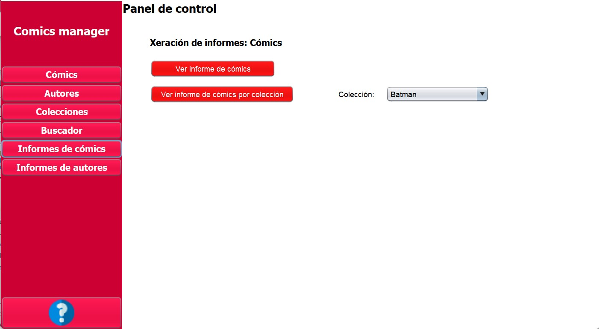

Informes de datos

A través dos paneis de informes é posible xerar documentos personalizados dos datos existentes na base de datos que nos mostran información relevante sobre os obxectos de estudo de cada un.
Podemos distinguir dous paneis de informes, un para cada unha das entidades importantes almacenadas na base de datos.
- Informes de cómics: Dende esta pantalla temos acceso a diferentes informes relacionados cos cómics contidos na base de datos.
- Informes de autores: Dende o panel accesible desde o menú da parte lateral esquerda podemos ver diferentes informes relacionados cos autores da base de datos.